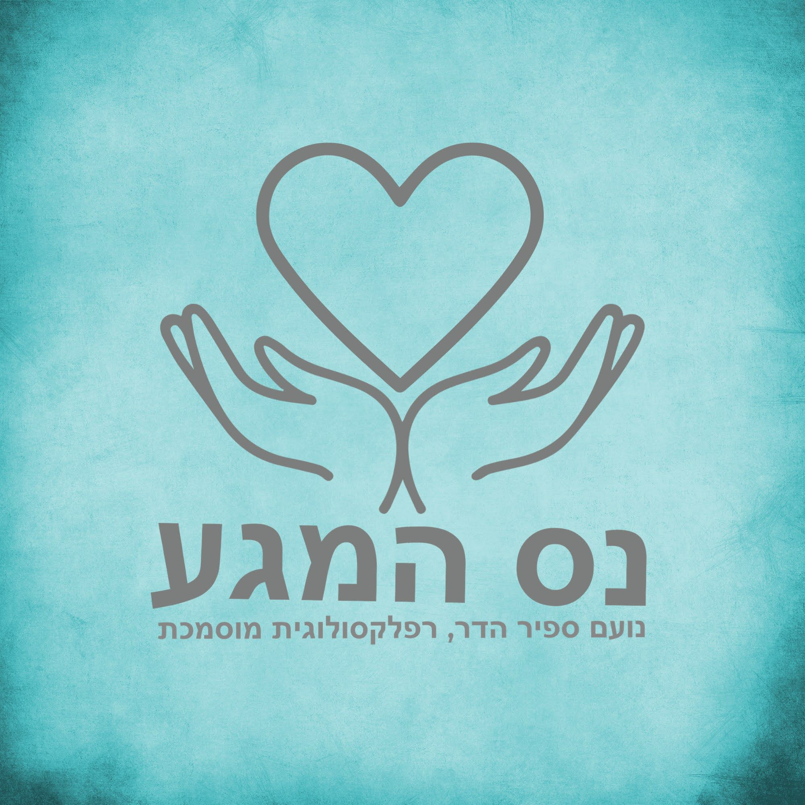
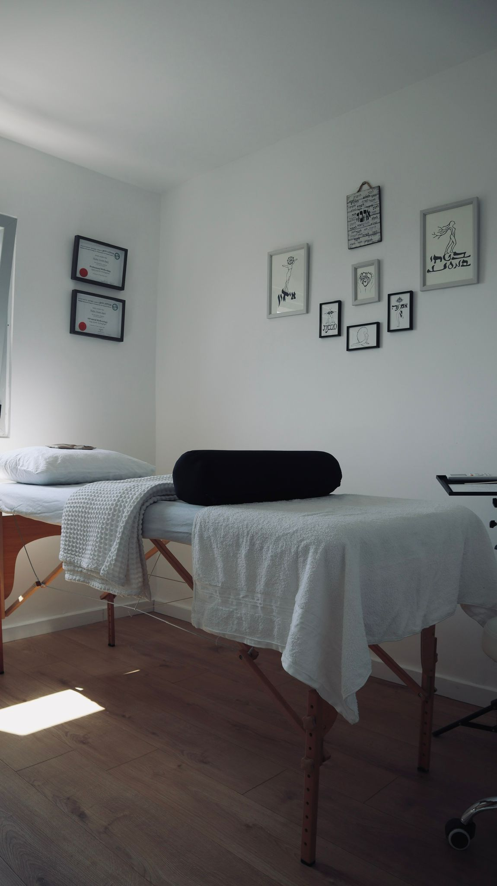
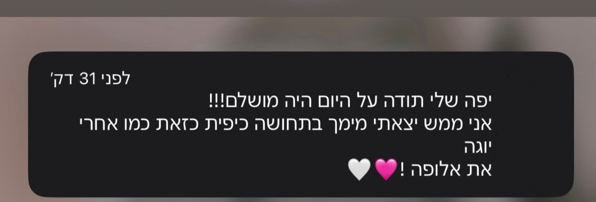
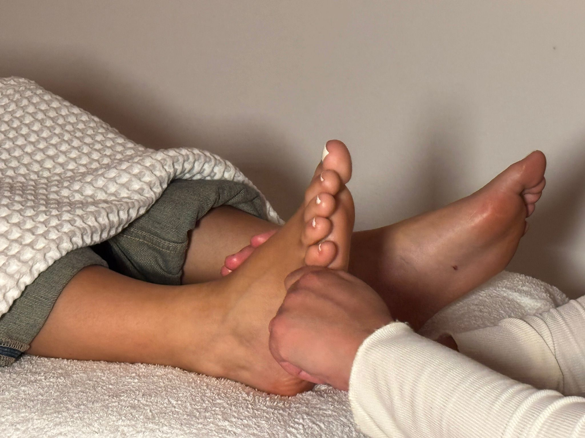
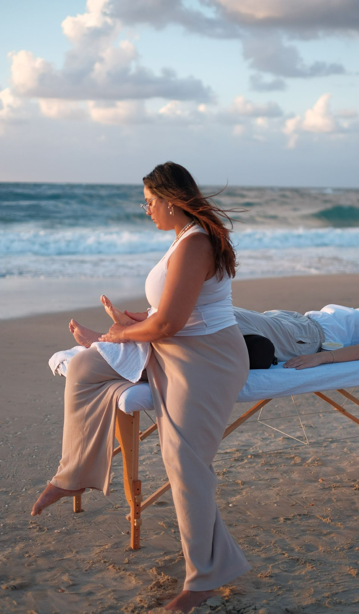

אם את מרגישה שהעומס מכריע אותך,
אבל בסוף הגוף מתחיל לאותת דרך כאבים, עייפות כרונית ומתח נפשי.
וגם כשאת כבר מוצאת זמן לנוח הראש לא מפסיק לעבוד והשלווה נראית כמו זיכרון רחוק.
ולא משנה כמה פעמים אומרים לך שצריך: ״פשוט להירגע״, זה לא עוזר כשהמתח אגור עמוק בתוך מערכת העצבים והתאים שלך.
רובנו רגילים לטפל בסימפטומים, לא בשורש הבעיה!
אנחנו לוקחים כדור נגד כאבים או מחכים שהסופ"ש יגיע, אבל שוכחים שהגוף והנפש הם יחידה אחת שזקוקה לתחזוקה ואיזון שוטף.
אני יודעת מה עובר לך בראש – 'זה בטח יעבור לבד' או 'אין לי זמן לזה עכשיו'. אבל המציאות היא שמתח שנצבר ולא מטופל הופך לכאב פיזי, לחוסר סבלנות ולירידה באיכות החיים שלך.
אבל הנה האמת: הגוף שלך הוא הבית שלך. אם לא תשקיעי בו, הוא יפסיק לשרת אותך כפי שהיית רוצה. רפלקסולוגיה היא לא רק "עיסוי בכפות הרגליים" – היא כלי רב עוצמה לאבחון וטיפול במערכות הגוף השונות דרך נקודות הלחיצה.
הגיע הזמן לעצור רגע: הפתרון הוא לא עוד כוס קפה או התעלמות מהכאב. הפתרון הוא לתת למערכת שלך הזדמנות לעשות "Restart", לשחרר חסימות ולהחזיר את זרימת האנרגיה הטבעית – כדי שתוכלי לחזור לעצמך באמת.

יש דרך להרגיש אחרת!
כבר לא "רק מחזיקות מעמד"...
הנה מה שיש למטופלות שלי לספר על תחושת ההקלה, האיזון והשקט שהן מצאו בטיפול:

נעים מאוד, אני נועם…
אני מאמינה שכפות הרגליים שלנו הן המפה של הנפש והגוף, ודרכן ניתן להגיע לריפוי עמוק ואמיתי. בעולם המודרני והעמוס שבו אנחנו חיים, קל מאוד לאבד את הקשר עם הגוף. המטרה שלי היא להעניק לך את המקום והזמן שבו תוכלי לעצור, לנשום ולתת למערכת שלך לחזור לאיזון.


עם ניסיון רב בטיפול במגוון רחב של מצבים רפואיים ורגשיים, וליווי מטופלים כספקית מוכרת של אגף השיקום במשרד הביטחון, אני כאן כדי להקשיב לגוף שלך יחד איתך. הטיפול אצלי הוא אישי, עדין אך עוצמתי, ומותאם בדיוק למקום שבו את נמצאת היום.
לעזור לכמה שיותר נשים וגברים למצוא את המרכז השקט שלהם בתוך הסערה, ולחיות חיים מלאים בבריאות, אנרגיה ושמחה.